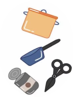
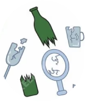
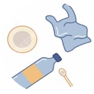
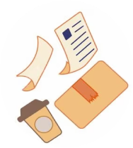
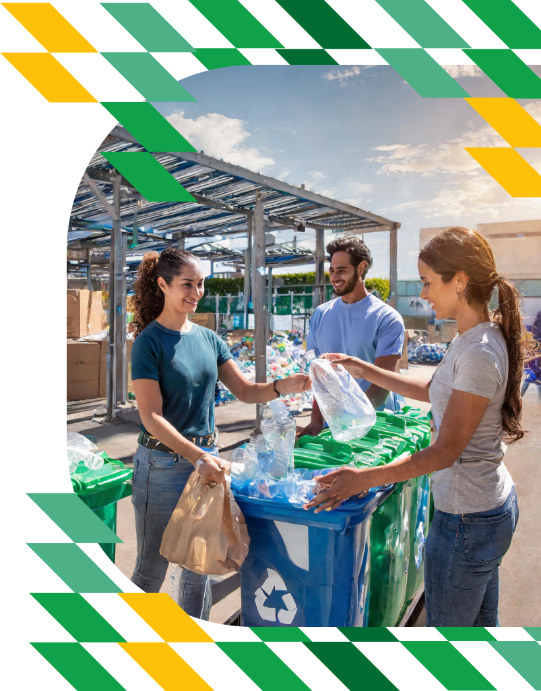
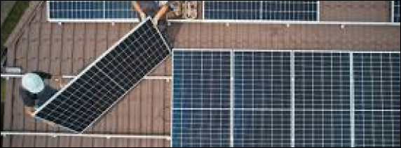

¿QUÉ MATERIALES RECICLAMOS?
-
Metales
-
Vidrios
-
Plasticos
-
Papel y cartón

Nuestra misión es promover la conciencia ambiental y facilitar la participación activa de la comunidad en la gestión responsable de los residuos. Nos esforzamos por crear un espacio donde los ciudadanos puedan encontrar fácilmente los puntos verdes cercanos a su ubicación, así como información relevante sobre cómo separar y desechar adecuadamente sus residuos.
A través de esta plataforma, buscamos fomentar una cultura de reciclaje y sostenibilidad, contribuyendo así a un ambiente más limpio y una comunidad más fuerte y comprometida con el cuidado del planeta. Juntos, trabajamos por un futuro más verde y saludable para todos
Conservación de recursos naturales: El reciclaje ayuda a conservar recursos naturales como madera, agua y minerales al reducir la necesidad de extraer y procesar materias primas nuevas.
Reducción de la contaminación: Al reciclar, se reduce la cantidad de desechos que terminan en vertederos o incineradoras, lo que ayuda a prevenir la contaminación del aire, agua y suelo.
Ahorro de energía: La fabricación de productos a partir de materiales reciclados suele requerir menos energía que la producción a partir de materias primas vírgenes, lo que ayuda a reducir las emisiones de gases de efecto invernadero y el consumo de recursos energéticos.
Reducir las emisiones de dióxido de carbono en un 95%
Ahorrar hasta 5,774 kWh de energía
Ahorrar hasta 5,774 kWh de energía
Fomentando una
cultura de reciclaje
y sostenibilidad.